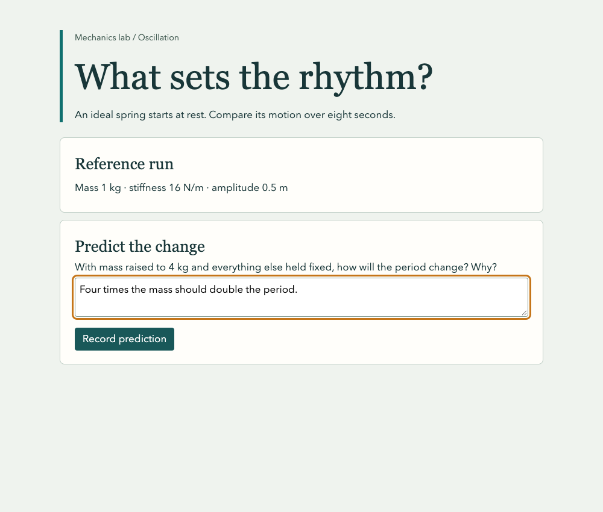
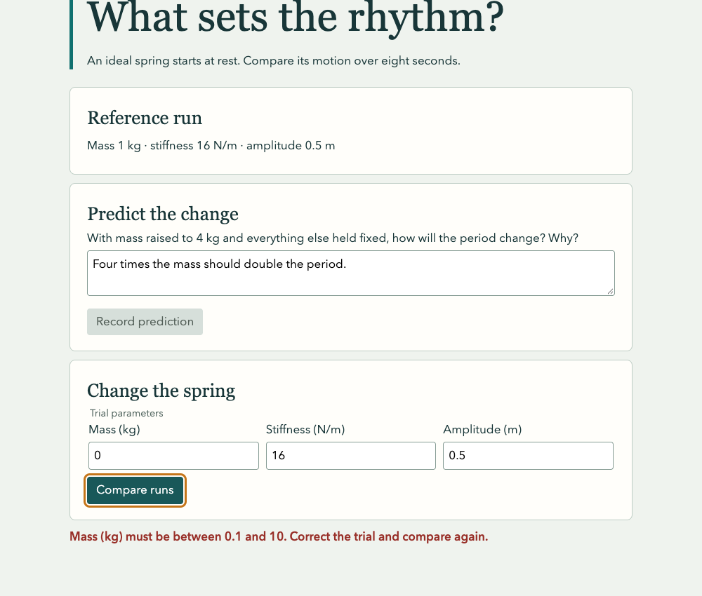
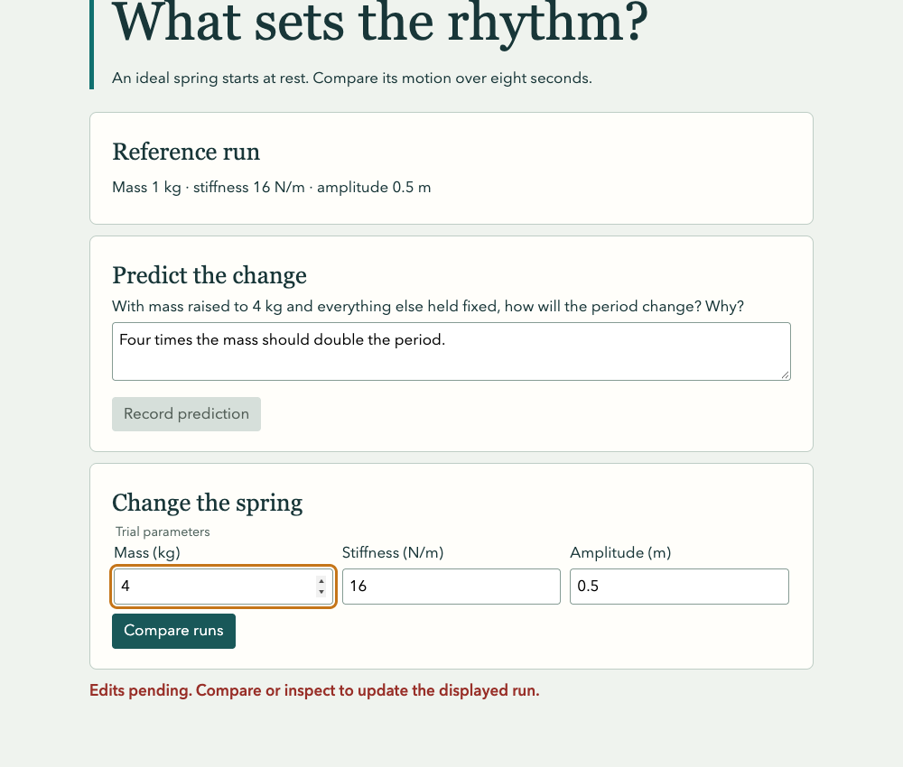
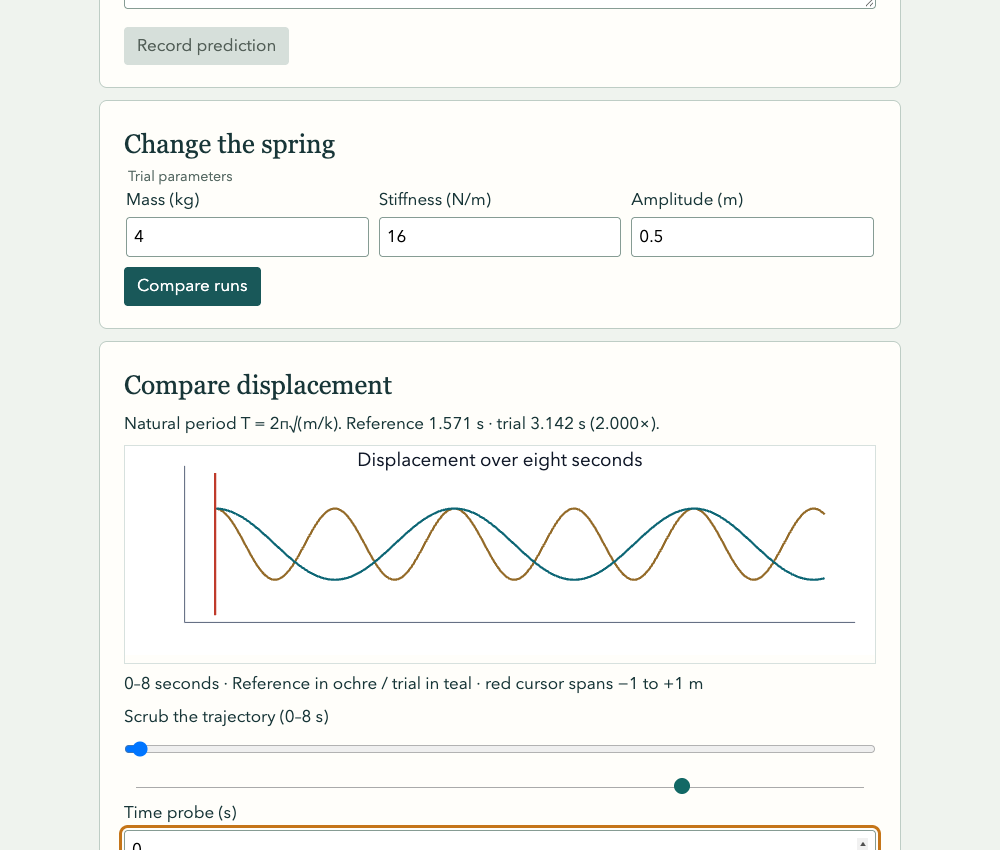
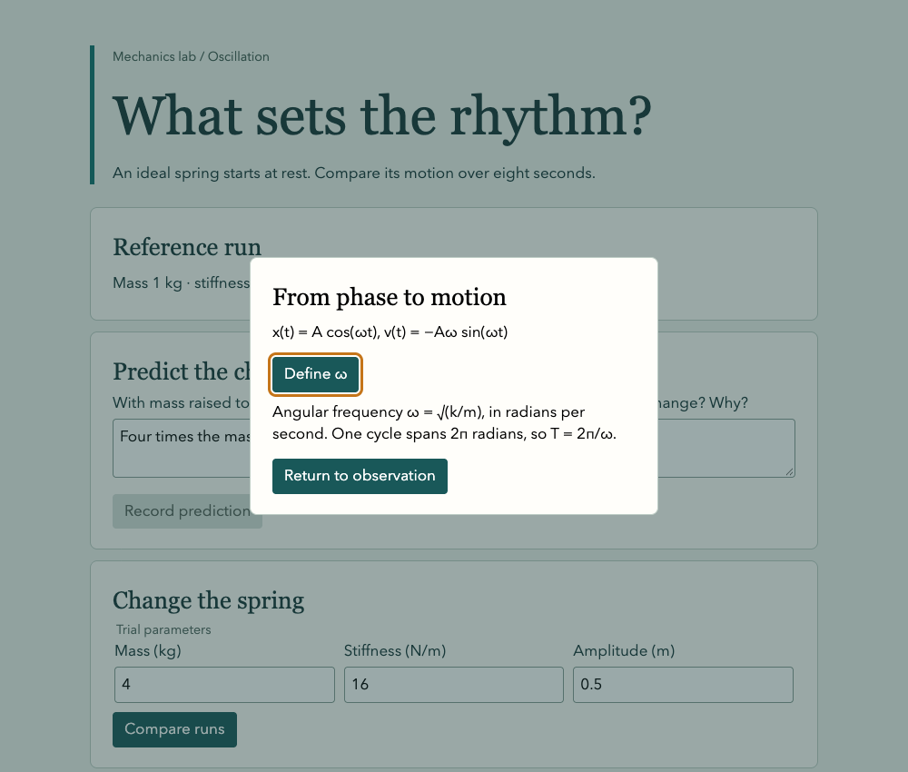
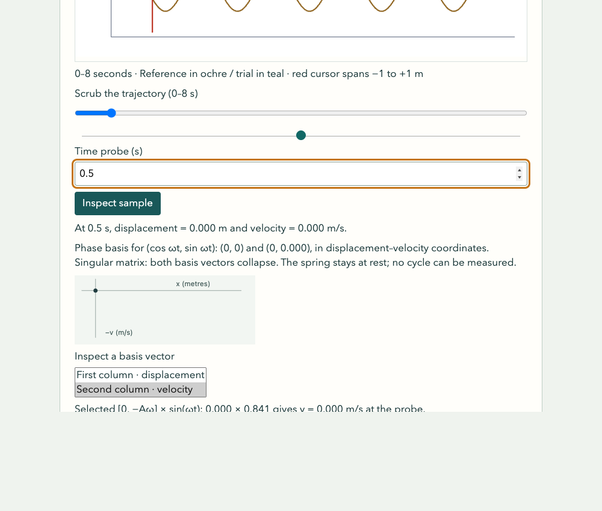
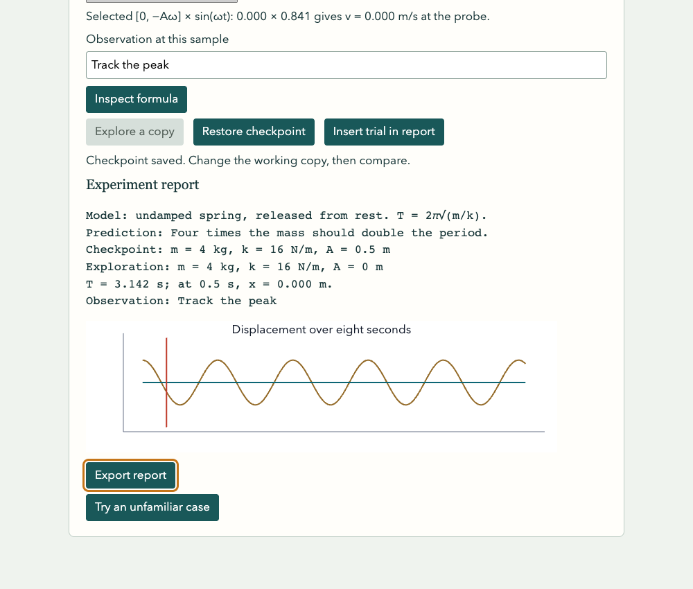
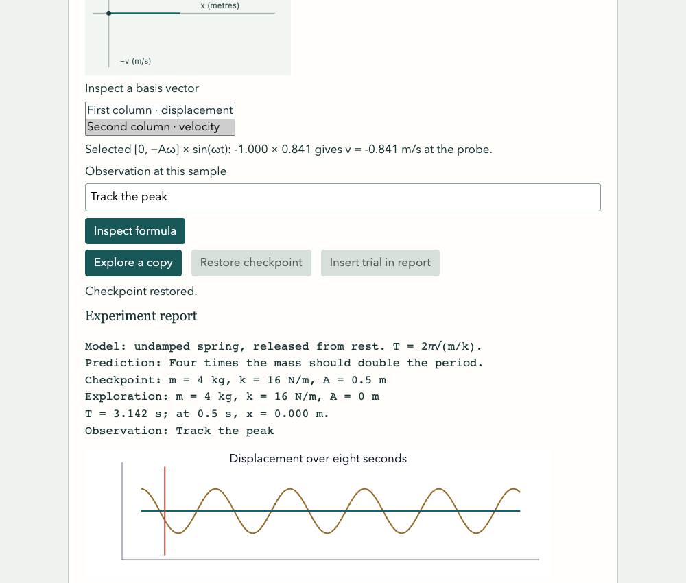
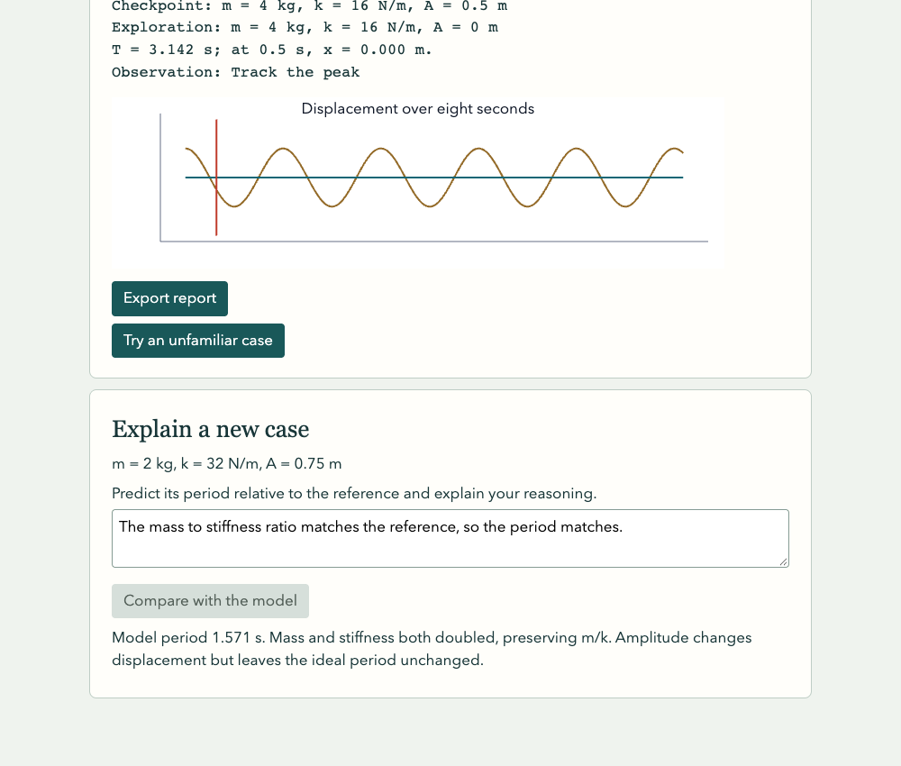

Oscillator walkthrough
1. Prediction · Synthetic response before the trial is available.
2. Rejected mass · Zero mass is rejected before a run is created.
3. Manipulate mass · The corrected trial is ready to compare.
4. Compare runs · Reference and trial periods at the committed mass.
5. Inspect notation · The sampled motion leads to the angular-frequency definition.
6. Collapsed basis · Zero amplitude collapses the working copy to rest.
7. Insert result · The report records the copied trial, source checkpoint and trace.
8. Restore the checkpoint · Restore the sampled trial while retaining the inserted result.
9. Unfamiliar case · A keyboard-entered explanation precedes the model comparison.